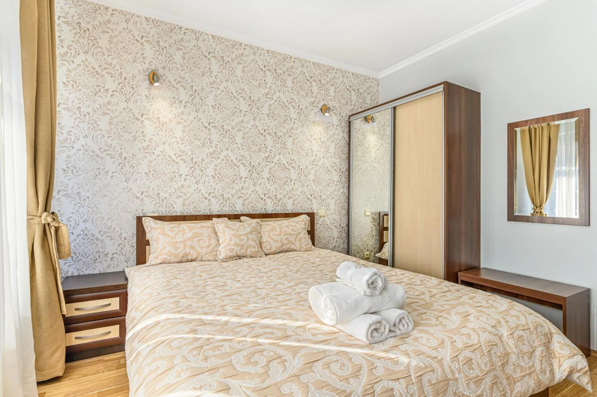

Brașov, Strada Traian 24
Vila Nomad, a quiet guesthouse in Brașov
Vila Nomad is a 3-star guesthouse with 4 rooms in the Traian area of Brașov, Romania, a 3-6 minute walk from Brașov County Emergency Clinical Hospital, depending on the entrance used. Rooms have private bathrooms and fast free Wi-Fi, and you book directly on WhatsApp. On Booking.com the property scores 9.7 from 181 reviews, checked on 5 November 2026.

Rooms and prices
| Room | Size | Price per night |
|---|---|---|
| Deluxe double room | 18 m² | from 250 RON (about 47 EUR) |
| Deluxe double room with balcony and city view | 24 m² | from 275 RON (about 51 EUR) |
Prices are per room, not per person. A city tax of 12 RON per day is added and paid on arrival. Both room types suit 2 adults and have a private bathroom, air conditioning, heating, a desk, a flat-screen TV and soundproofing. Guests also share a living room, a terrace and a yard. The final rate is confirmed on WhatsApp.
Location
The address is Strada Traian 24, 500332 Brașov. The County Emergency Hospital at Calea București 25-27 is a 3-6 minute walk away, which makes Vila Nomad practical for relatives of patients and hospital visitors. Vila Nomad is not affiliated with the hospital. Bus stops are nearby, street parking has one free space with the others paid, and Brașov-Ghimbav Airport is about 13 km away.
House rules and payment
- Check-in from 15:00 to 22:00. Check-out from 08:00 to 11:00. Arrival after 22:00 is possible if you announce your arrival time. The phone line is available around the clock.
- There is no minimum stay.
- Payment in cash, by card, by bank transfer or with Romanian holiday vouchers.
- The deposit may be refundable if you cancel at least 7 days in advance.
- Rooms are non-smoking. Pets are not accepted.
Frequently asked questions
How far is Vila Nomad from Brașov County Hospital?
It is a 3-6 minute walk from Brașov County Emergency Clinical Hospital, depending on the entrance used.
Do the rooms have a private bathroom?
Yes. Every room has a private bathroom with towels, a hair dryer and free toiletries.
How much does a night cost?
Rooms start at 250 RON (about 47 EUR) per night, per room. The room with a balcony starts at 275 RON (about 51 EUR).
Is there parking?
Yes. Parking is on the street, with one free space and the others paid.
Can I arrive after 22:00?
Yes, if you announce your arrival time. You can call +40 722 292 023 at any time.
Is there a minimum stay?
No. You can book a single night.
How do I book?
Send a WhatsApp message to +40 722 292 023. Availability and the final rate are confirmed there.